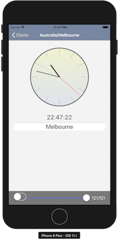
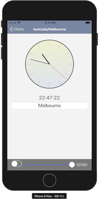

View-state driven applications
Cocoa applications are traditionally “presentation driven”. By that, I mean that view changes commence by first choosing the presentation change – like a view controller segue – and later we set the data to give the view content.
In this article, I’ll look at why a presentation driven approach conflicts with the primary rule of application design discussed in the previous article. I’ll look at some limitations caused by this conflict and look at what happens when we invert the steps by first setting data – an encoding of display intent – then later update the presentation to match this data.
To demonstrate some potential benefits of a data driven approach, the code in this article will show how you can implement complete user-interface logging, full state restoration and user-interface “time travel” in an app that remains as close as possible to Xcode’s “Master-Detail App” project template.
This article will be a more in-depth look at the same topic and sample project (significantly updated) that I presented at try! Swift NYC 2017. The video for that talk is available if you’d prefer to start there.
Ideal Model-View-Controller
Ideally, in a Model-View-Controller application, user-actions occur along the following data-flow path:

A User-action is received by a View which targets its Controller. The Controller performs an action on the Model. Neither the targeted Controller nor the interacted View make any changes at this time – they are merely propagating an event.
The Model makes whatever changes are appropriate for the action and sends a notification. Any Controller interested in the notification may observe it. Observing Controllers update Views according to the changes described in the notification.
This is ideal Model-View-Controller. User-actions always propagate through to the Model. No state changes until the action occurs on the Model. Views are updated solely as a result of notifications from the Model. As I discussed in the previous article, these requirements preserve the notion of the Model as an abstraction. These requirements are the minimum for any application design.
Clocks
To demonstrate a typical Model-View-Controller app, I wrote the following application.
 
You can view this version of the app on the “undoredo” branch of the Clocks github repository.
The app is a basic world-time viewer. The main screen shows a list of timezones. You can tap the “+” button and add new timezones from the “Selection” screen. You can set “Edit” mode on the main screen and delete existing timezones. You can tap on a timezone on the main screen to show a detail view. You can rename the timezone on the detail view.
It’s not the functionality of the app that’s important but the fact that the app is, as close as I can make it, directly based on Xcode’s “Master-Detail App” project template and follows the same basic formula implied in Apple’s sample code.
Let’s look at the code path for use-actions in this app. Code on the MasterViewController for deleting a Timezone from the list is:
// Controller receives delegate action from View and invokes Model action
override func tableView(_ tableView: UITableView, commit editingStyle:
UITableViewCellEditingStyle, forRowAt indexPath: IndexPath) {
Document.shared.removeTimezone(sortedTimezones[indexPath.row].uuid)
}
// Document notifies change and Controller updates View accordingly
func handleDocumentNotification(timezones: Document.DataType, action: Document.Action?) {
switch action {
case .removed(let uuid)?:
let index = sortedTimezones.index { $0.uuid == uuid }!
updateSortedTimezones(timezones: timezones)
tableView.deleteRows(at: [IndexPath(row: index, section: 0)], with: .automatic)
}
}These two functions show all the steps from our “ideal Model-View-Controller” diagram. The first function shows the action from the View and the invocation on the Model. The second function shows the observation of the Model-notification and the application of changes to the View.
Do you know what your app is doing?
In the Clocks app, every time the Model is changed, a snapshot of the Model is saved. The app displays a slider at the bottom of the screen and by using the slider, you can rewind the Model back through each of the snapshots.
The effect is straightforward: the slider and implements undo and redo using the Model snapshots.
However, try the following steps:
- go to the “Selection” screen and add a new timezone
- from the main screen, select the “Edit” mode in the navigation bar
- delete the newly added timezone and leave “Edit” mode by selecting “Done”
- use the slider at the bottom of the screen to slowly undo these changes
The added timezone will reappear as its deletion is undone and then disappear again as its creation is undone. However “Edit” mode will not reappear and the selection screen will not reappear.
We say that the View presents the Model and the Model is the true representation of the app but this simple app demonstrates that it’s a lie. The Model is not a complete representation of the application’s state. The View is not a simple display of content from the Model. The “Selection” screen is not a part of the Model but it affects the display. “Edit” mode is not a part of the Model but it affects the display. Many User-actions in typical Model-View-Controller app do not follow the ideal data-flow path and change state without ever reaching the Model.
Separate pipelines
In typical MVC Cocoa, as this diagram shows, segues and other “presentation” changes – like the appearance or disappearance of the SelectionViewController in the Clocks app – are handled entirely within the Controller layer, leaving the Model out-of-the-loop.
It’s not just a problem with “presentation” changes. Many common View and Controller classes in Cocoa are built around they idea that they can be constructed, updated and mutated without a Model being involved at all. It is common for any of the following data to exist only in Views or Controllers and not in the Model:
- The navigation stack in a navigation controller.
- Scroll position of a scroll view.
- Row selection in a table view.
- Tab selections in a tab view.
- The state of Switches and sliders.
- Uncommitted text fields.
This data that lives outside the Model is called “View-state”. This is a collection of the most user-visible state in our application and the standard approach in Model-View-Controller is to ignore it.
Rethinking what should be a Model
Yes, I know that traditional Model-View-Controller intentionally excludes View-state from the Model. Traditional formulations of the Model describe the persistent data of the app and everything non-persistent is excluded. The View intentionally held uncommitted data so validation and other business logic could be delayed until a “commit” step. RAM for multiple copies, CPU for validation, HD space for persistent storage – these things were slow and highly constrained resources.
But in modern applications, we have the CPU power to validate everything continuously, we have the spare RAM to keep multiple copies of state and the View is persistent between app launches. The premise that non-Document state isn’t worthy of the same benefits as Document state lacks justification and discourages programmers from correctly abstracting non-Document state.
If we demand clean Model abstractions for the Document, then I don’t think there’s a good justification to exempt View-state – or any other state – from the same requirements. I think the fact that we can’t rewind the entire user-interface as easily as the document is an indication that lack of coordination and management of state has left us out-of-control of our own application.
I think we should expand the definition of Model to:
All mutable state that is directly represented in the View – whether it is stored in the Document, View-state, User-settings, Filesystem, System-services, Network or elsewhere – is a Model and should be cleanly abstracted from the View. Failure to isolate this mutable state within a Model abstraction represents a failure of application design.
Following this rule dogmatically, I should probably have united the use of Timer and Date under a single “Time” Model abstraction in the app but at this point, it’s far from the biggest problem.
A Model for View-state
We need a Model abstraction for the View-state.
If you’ve never treated View-state as a Model before, this can be a strange statement to make. To understand what’s required, let’s start by looking at the Document Model that we already have.
The existing Document Model
The Document Model in the Clocks app is called Document and offers the following mutating methods:
func addTimezone(_ identifier: String)
func updateTimezone(_ uuid: UUID, newName: String)
func removeTimezone(_ uuid: UUID)By understanding the actions we can perform on the Model, we can understand the Model. These actions lead to the internal representation of the Document:
private var timezones: [UUID: Timezone] = [:]
struct Timezone: Codable {
let uuid: UUID
let identifier: String
var name: String
}The primitive storage for the Document is just a collection of identifier and name pairs, keyed by uuid in a dictionary.
Our new ViewState Model
Let’s look at the View-state in a similar way. I’ve already discussed the major actions a user can perform:
- tap a row in the main table view to change the detail selection
- enable or disable “Edit” mode on the main table view
- show or hide the new timezone selection view
There’s also scrolling in both the main table view and the new timezone selection view and a search field in the new timezone selection view for filtering the list.
That’s the full list of user actions that don’t immediately result in a change to the Document. That gives the following list of mutating methods for our new ViewState:
func scrollMasterView(offsetY: Double)
func scrollSelectionView(offsetY: Double)
func changeDetailSelection(uuid: UUID?)
func changeEditModeOnMaster(_ isEditing: Bool)
func changeSelectionViewVisibility(_ visible: Bool)
func selectionViewSearchString(_ value: String)We could represent the values that these methods change as 6 properties on a single struct but I think it’s better to organize these properties as a tree of structs, reflecting the actual Controllers in the View-tree.
This gives a data representation of our ViewState Model as follows:
private (set) var splitView: SplitViewState = SplitViewState()
struct SplitViewState: Codable {
var masterView: MasterViewState
var detailView: DetailViewState?
var selectionView: SelectionViewState?
}
struct MasterViewState: Codable {
var masterScrollOffsetY: Double = 0
var isEditing: Bool = false
}
struct SelectionViewState: Codable {
var selectionScrollOffsetY: Double = 0
var searchText: String = ""
}
struct DetailViewState: Codable {
let uuid: UUID
}Look back over the roughly 30 lines of declaration code in this section. These declarations are an abstract representation of the entire 600 line program.
From Presentation driven to View-state driven
We’ll look at how this changes our code but first, lets look at how a “presentation” change occurred in the “undo-redo” version of the app.
// Controller receives delegate action from View and invokes performSegue
override func tableView(_ tableView: UITableView, didSelectRowAt indexPath: IndexPath) {
performSegue(withIdentifier: "showDetail", sender: tableView)
}
// Controller sends data to segue destination
override func prepare(for segue: UIStoryboardSegue, sender: Any?) {
if segue.identifier == "showDetail" {
if let indexPath = tableView.indexPathForSelectedRow {
let timezone = sortedTimezones[indexPath.row]
let controller = (segue.destination as!
UINavigationController).topViewController as! DetailViewController
controller.uuid = timezone.uuid
controller.navigationItem.leftBarButtonItem =
splitViewController?.displayModeButtonItem
controller.navigationItem.leftItemsSupplementBackButton = true
}
}
}As clumsy as this code looks, it is almost unchanged from the “Master-Detail App” template. This is a presentation driven transition. It starts by asking a the Controller to change the View-tree in the tableView(_:didSelectRowAt:) function and then during the View-tree change in the prepare(for:sender:) function, it attempt to find and set data on the newly created view.
There’s so much to dislike about this code but from a Model abstraction perspective, the biggest problem is that the code never clearly encodes its intent. The performSegue line implies that the intent is merely to “showDetail” but that’s not true: the intent is to show the selected timezone.uuid in the detail view. The hideously ugly work performed in the prepare(for:sender:) function is mostly just trying to reconstruct the key operand of that intent from the crime-scene wreckage left behind on the Controller and tableView.
Let’s now look at this code in a View-state driven approach.
// MasterViewController receives delegate action from View and invokes performSegue
override func tableView(_ tableView: UITableView, didSelectRowAt indexPath: IndexPath) {
ViewState.shared.changeDetailSelection(uuid: sortedTimezones[indexPath.row].uuid)
}
// SplitViewController receives delegate action from View and invokes performSegue
func handleViewStateNotification(state: SplitViewState, action: SplitViewState.Action?) {
switch action {
case .changedDetail? where state.detailView != nil:
masterViewController?.performSegue(withIdentifier: "detail", sender: self)
// other actions omitted
}
}We invoke an action on the ViewState which changes the data first – immediately declaring an intent to change the detail selection to the selected UUID – then the SplitViewController (not the MasterViewController) observes that data change and updates the detail presentation in response. We never need to set the uuid directly on the DetailViewController – the DetailViewController subscribes to the ViewState and learns what its uuid is from there.
Compare this code sample to the “ideal Model-View-Controller” Model change back in the Clocks section. The two changes follow a nearly identical series of steps.
What do we gain?
You can find the
ViewStatebuild on the “master” branch of the Clocks github repository.
Time-travel
Unlike the “undoredo” branch of this project, dragging the slider on the “master” branch offers full time-travel.
Ironically, for an app that displays world time, time-travel will not affect the time displayed on any of the clocks since (state from Timer and Date is deliberately omitted from the HistoryViewController).
What time-travel means is that the slider at the bottom of the screen will rewind the ViewState at the same time as the Document, resulting in an entire app user-interface that can be wound forward and backward with the slider. Edit mode will pop on and off, the detail view will pop in and out, the selection view will appear and disappear, the scroll position will adjust, uncommitted text fields will wind forward and backward like committed text fields.
If you’ve never seen a time-travelling user-interface before, I strongly recommend actually running the project and playing with the slider. It shouldn’t be surprising to see an application instantly and completely respond to commands but it is. We’re accustomed to being perpetually out-of-control of our own applications.
The slider has a UISwitch on the left. When you activate the slider, it will split into separate sliders for “Document” and “View-state” so you can manipulate the two independently. This will occasionally result in quirks where the “View-state” needs to be altered to reconcile it with the “Document” but it’s proof that the two are truly separate models.
ViewState acts as a “Coordinator”
With a View-state Model, separate controllers can implicitly coordinate by tracking the same data in the View-state Model. There’s no longer a need for the MasterViewController to traverse through the view and controller hierarchy to set values on the DetailViewController – the DetailViewController can simply ask the ViewState for its values.
In a presentation driven app, there’s an instinct to handle the full path of all actions on the Controller where the action is received. This dumps a lot of work on the MasterViewController, even though it’s not the parent of many of the actions it coordinates.
With a View-state Model, the presentation of the SelectionViewController and DetailViewController can be managed by the actual parent of these actions (the SplitViewController) rather than trying to handle all this work from the table view in the MasterViewController.
Some design patterns use a “Coordinator” to actively propagate communication between Controllers. The ViewState fulfills a similar role through passively observed Model-data, rather than actively propagated Control-actions.
Persistence is trivial
In a typical Cocoa app, we rely on Storyboards to help persist view controllers. Even with the help of Storyboards, there is often substantial UIStateRestoring or UIDataSourceModelAssociation work to fully restore our state.
With ViewState, all commit and verify work is already part of the ViewState observing pipeline so everything is automatic. No UIStateRestoring or UIDataSourceModelAssociation needed. In fact, you don’t even need Storyboards.
Assuming you’re already handling the ViewState notifications correctly, this is all the code required for state restoration:
func application(_ application: UIApplication, willEncodeRestorableStateWith
coder: NSCoder) {
coder.encode(try? ViewState.shared.serialized(), forKey: .viewStateKey)
}
func application(_ application: UIApplication, didDecodeRestorableStateWith
coder: NSCoder) {
if let data = coder.decodeObject(forKey: .viewStateKey) as? Data {
ViewState.shared.reloadAndNotify(jsonData: data)
}
}Restoring state for testing scenarios
Since restoring the user-interface is no longer tied to UIStateRestoration or Storyboards, you can jump to a particular user-interface configuration at any time – speeding development and debugging scenarios.
let jsonString = """
{"detailView":{"uuid":"8642FA12-D3F7-48B6-B308-3B415A7145D0"},
"masterView":{"masterScrollOffsetY":0,"isEditing":false}}
"""
let jsonData = jsonString.data(using: .utf8)!
ViewState.shared.reloadAndNotify(jsonData: jsonData)If your document also supports arbitrary reloading (as the Document does in the Clocks app) you can combine the two to jump to any debug or testing scenario at any time.
Debug information
The entire state of the view can be logged to the console on each step, enabling better debugging – you can know the exact state at any time (and the preceding transitions) so you can quickly find the cause of problems.
The Clocks app logs both its Document and View-state when either changes:
Changed Document to:
["CC0D7C93-3FBC-4D89-9127-ABBF798420F6",{"identifier":"Australia\/Melbourne",
"name":"Melbourne","uuid":"CC0D7C93-3FBC-4D89-9127-ABBF798420F6"},
"54FA679F-6036-431D-957F-6E8CC1B8DA50",{"identifier":"Africa\/Addis_Ababa",
"name":"Addis Ababa","uuid":"54FA679F-6036-431D-957F-6E8CC1B8DA50"}]
Changed ViewState to:
{"detailView":{"uuid":"CC0D7C93-3FBC-4D89-9127-ABBF798420F6"},"masterView":
"masterScrollOffsetY":0,"isEditing":false}}
This logged state can be directly used in state restoration – as in the previous example – to recreate the scenario at any time.
What is the cost?
Code size
Tracking the View-state is usually more code. This is no different to any kind of Model – there are more declarations and more work to set and observe changes going into and out of the model abstraction.
Measuring the “.swift” file size (excluding the “Utilities” folder) with the command-line tool cloc:
- the “undoredo” version of the project is 437 lines
- the “timetravel” version is 610 lines
85 lines of that difference is the “ViewState.swift” file. The remaining 88 line difference is more complicated; it’s more like a 150 line difference, sometimes an increase, sometimes a decrease.
Without needing to go via ViewState, the “undoredo” branch has a few buttons connected directly to segues in the Storyboard. The “undoredo” branch also doesn’t track scrolling (the “timetravel” build could omit this but it’s part of making time-travel seem magical).
Tracking View-state doesn’t always increase code size. For some tasks, it simplifies. The DetailViewController actually benefits from not needing to self-manage when the Timezone it is observing is deleted from the Document. All “prepare for segue” methods are removed from MasterViewController. All UIStateRestoring methods are removed.
Lots of observing
In an app without View-state, you might need to observe just one object – the Document Model – in each Controller. If you add View-state to this, your observation needs are going to double.
My particular implementation of observing for the Document and ViewState doubles this again. Have a look at the handleViewStateNotification for the SelectionViewController:
func handleViewStateNotification(state: SelectionViewState, action:
SelectionViewState.Action?) {
switch action {
case .changedSearchString?: updateForSearchString(state.searchText)
case .scrolled?: tableView?.contentOffset.y = CGFloat(state.selectionScrollOffsetY)
case .none:
tableView?.contentOffset.y = CGFloat(state.selectionScrollOffsetY)
searchBar?.text = state.searchText
updateForSearchString(state.searchText)
}
}This function has to handle two possible ViewState actions – “search string change” and “search table scrolled” – but it also has to handle a third .none case which is used when the ViewState is reloaded and everything needs to be reprocessed.
It would be nice to avoid this redundancy but I’m not sure how to do this cleanly since sometimes, responding to an already applied action and restoring state requires slightly different logic (see the need to set the searchBar?.text during restore which isn’t needed on .changedSearchString because the user has already set this value).
Uncooperative UIKit/AppKit classes
The hardest part when writing an application for the first time in a View-state driven approach is learning how to handle Views and Controllers that fail to precisely notify when changes occur and refuse to accurately adhere to state they are given.
To be clear: none of these are show stopping problems, nor even particularly difficult to manage, but they all require guesswork and multiple steps since Cocoa classes were never written to clearly notify changes in state or follow programmatic (rather than user) instructions.
Conflicting actions
Multiple “present” animations are not permitted to occur at the same time – so if you’re trying to restore two pieces of state simultaneously, these might need to be queued – otherwise the app will raise an exception. This causes problems in the Clocks app when the modal “Selection” screen and the “Detail” view need to be restored at the same time. The SplitViewController class contains some careful sequencing interaction between selectionViewController and reloadDetailView to avoid problems.
A less fatal conflict occurs when trying to set a scroll position during UITableView reloads. The UITableView reloads asynchronously over an indeterminate amount of time. There is no way to queue the scroll position change to occur when this operation is complete. When a tableView.reloadData() occurs, MasterViewController does not bother to set the scroll position at all since I was not able to find a reliable way to both reload data and scroll.
Poorly notified changes
UINavigationController may change its navigation stack without explaining why when the user taps the back button. The navigationController(_:didShow:animated:) method is forced to guess what may have happened.
Detecting scroll state presents a slightly different problem: to detect when scrolling has ended, you need to implement two separate delegate methods – scrollViewDidEndDecelerating and scrollViewDidEndDragging – and carefully check the decelerate parameter on the latter to determine if it is actually the end of scrolling.
User-actions with no clear programmatic equivalent
In portrait on an iPhone, the detail view of the split view will also collapse onto the master view’s navigation stack. The user can tap the back button to remove this collapsed view but there’s no clean action to ask the split view to do it. It’s necessary to check the UINavigationController and guess whether the top view is a collapsed detail view and use popViewController to evict it. Messy work.
Conclusion
You can explore the two versions of the Clocks app on github:
(Minor note: when debugging one branch after using the other, you may see non-fatal state restoration errors as the two apps contain incompatible state restoration formats.)
The purpose of this article was to present an approach for tracking View-state in an application that is otherwise as close as possible to a typical Cocoa Model-View-Controller application.
I would argue that tracking View-state in a Model is more true to the spirit of Model-View-Controller than the traditional “ignore View-state” approach. When you track View-state in a Model, then the sum of Models in your app is truly a representation of your entire app and your View is the simple display of the Model that it should be, rather than being a complex combination of Model plus other untracked state.
As I write this article, I have now written a handful of trivial to small apps using this pattern. It manages navigation and state restoration really well while offering good conceptual clarity and excellent debugging capabilities. I think I’ll continue to write all small MVC apps this way. Observing both View-state and the Model on each Controller does get a little tiring and some Cocoa classes can feel truly obstinate when you’re trying to get them to behave precisely and punctually but the balance still feels strongly in favor of this approach.
There are numerous frameworks that aim to simplify issues with observing multiple Models or driving Cocoa classes through data by using reactive programming or reducers. However, these bigger frameworks increase the distance between the code you write and the effects of that code. The advantage to this View-state approach is that there is no real framework “in the way”.
The time-travel capability in the Clocks app is fun but you’d never ship time-travel in a real application. Even when debugging, simple View-state logging and the ability to restore your UI from JSON at any time are far more useful tools. I actually keep View-state logging on all the time because it is really helpful when something goes wrong – you can immediately understand if the problem was due to mis-setting View-state or mis-interpreting/observing.
However, time-travel is conceptually important for programmers who have forgotten that our programs are supposed to precisely and punctually obey our intent. Speaking for myself, I know that I had grown accustomed to boringly repetitive human-driven actions to arrange the user-interface while developing or testing. Launching the debugger directly into the precise state that I’m developing and testing has huge benefits (yes, UIStateRestoration is supposed to do this but it’s far more opaque and difficult to control).
Looking forward
One of the biggest drawbacks of this approach is the need for extensive observing code on the view controller that grows more complex with view properties that are interdependent on both the View-state and the Document.
In the next article, I’ll start by simplifying these observations with reactive programming and then continue to improve the syntax by building views in code with all behaviors fully specified.
Self promotion? On my own blog?!
This pattern, along with other experimental and conventional patterns and architectural techniques, are examined in depth in a book I’m writing with Chris Eidhof and Florian Kugler from objc.io titled App Architecture.

The worst possible application
A view construction syntax